We are gathering in the garden again — for weaving, for connection, and the simple pleasure of being outdoors together. Whether you are new to basketry or have been weaving for years, you are warmly welcome here.
It is free to come for the day.
If you would like to spend the night, please purchase a camping pass for $55
Catch the gentle rhythm of this and other weaving moments to come. Sign up for our email newsletter:
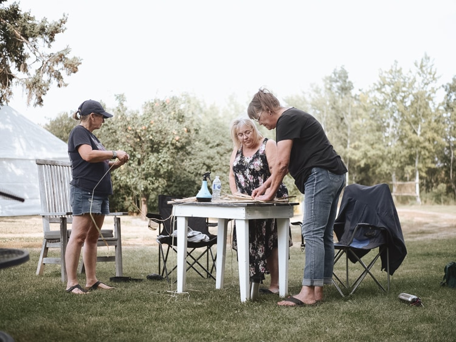
We have gathered an incredible group of teachers who will be offering workshops throughout the weekend.
Workshops are paid separately from camping. If you’d rather not sign up for a workshop, you are warmly invited to join the Open Weave space — a relaxed and welcoming place to spend time weaving alongside others.
Morning Workshops: 9:00 AM – 1:00 PM
Afternoon Workshops: 2:00 PM – 6:00 PM
Evenings: Free activities included with your registration
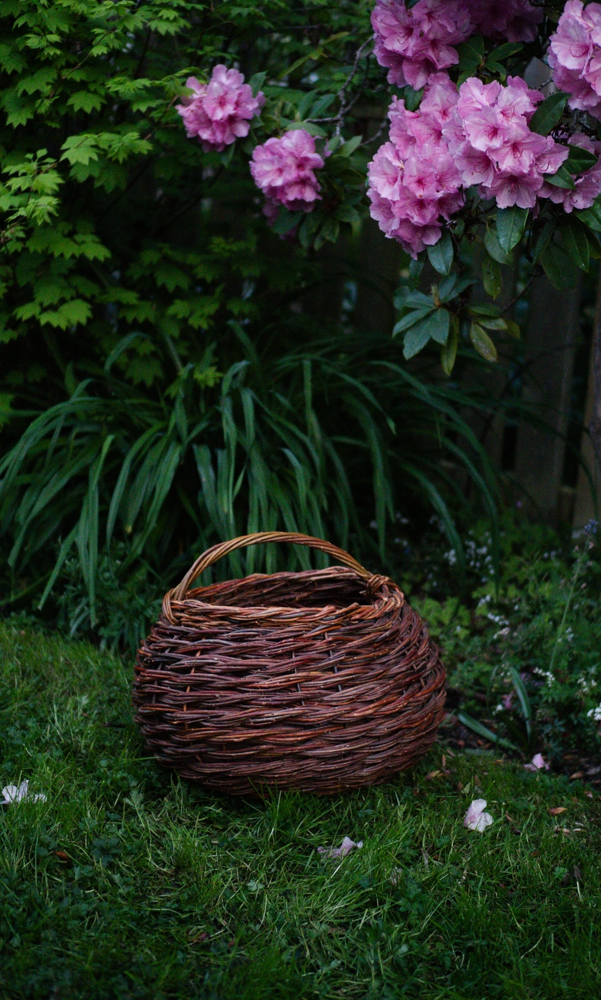
Join Freyja Ulveland for two full days of weaving as she guides you through the making of a beautiful, sculptural willow basket. This project is big, bold, and deeply satisfying to create — a basket that shows off the natural strength and beauty of willow. Together, we will work with generous bundles of material to shape a basket with a striking twisted rope effect.
Along the way, you will learn foundational techniques such as paring, waling, and rod borders, with the option to add a sturdy handle if you choose.
Instruction: $200 • Materials: $145 • Total: $345
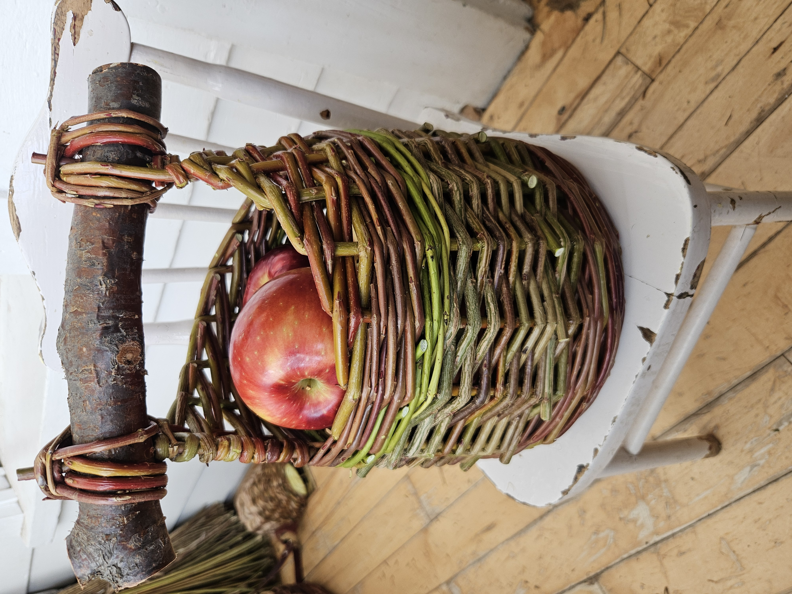
Join Mandy McKee for a full day of weaving as you create an asymmetrical basket inspired by Polish basketmaker Stanislav Dzuibak.
You will begin by pairing a 4 × 4 round base, then slyping, inserting, and pricking up stakes. The side weave of this basket will begin with a three rod wale, followed by an English rand to build up the sides while shaping the basket to your preferred form.
The top weave will be a step trac randed border using the stakes to create a slope on either side of the basket, forming a place for a wooden handle. To complete your basket, you will wrap the handle and bind it with the remaining stakes. Handles will be fit to suit your basket before drilling and wrapping.
Wooden handles will be provided, but you are welcome to bring your own special piece of wood (recommended diameter approximately 1½″ and at least 12″ long, leaving room for trimming).
You will be crafting your unique functional basket with locally harvested willow. Please be mindful that although this basket is suitable for beginners it does take a significant amount of hand and finger strength to maintain tension and encourage the willow to bend when needed.
Instruction: $160 • Materials: $65 • Total: $225
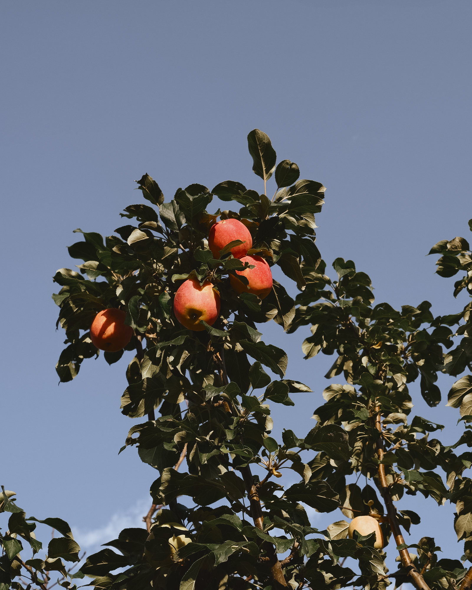
Join Betty Attwood to make an apple picking basket from wild foraged willow and a locally grown stick — just in time for apple season.
Instruction: $60 • Materials: $60 • Total: $120
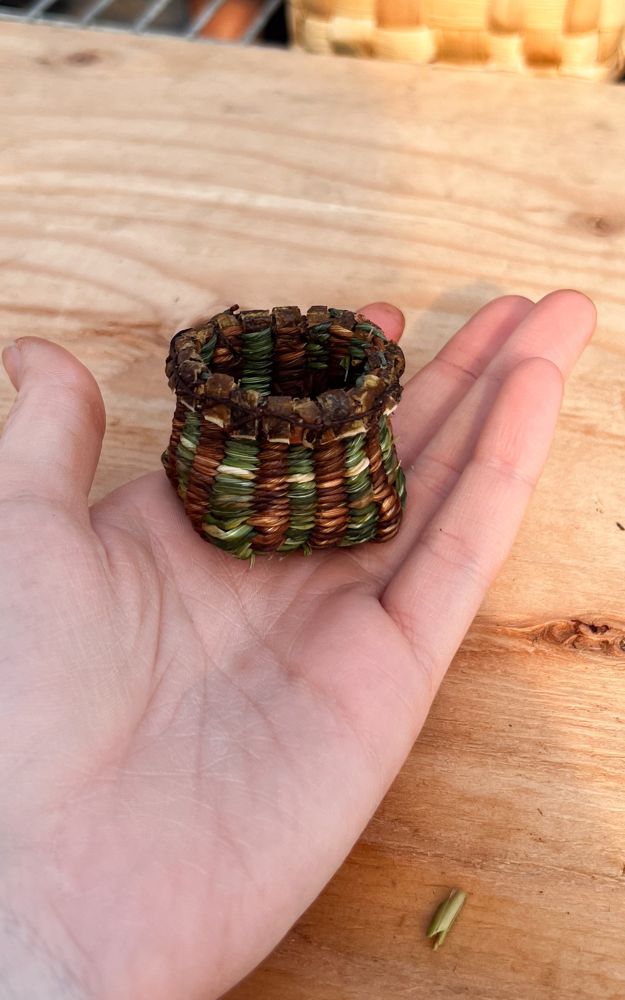
Join Kelsey Shapka in this workshop where you will create small rustic baskets using various natural materials gathered from the land. You will work with a variety of tree bark, dandelion stems, grasses, and other fibrous plants, while incorporating rhubarb or optional organic coloured threads to bring natural colour into your weaving.
Working with these natural materials is a beautiful and mindful practice. As your hands begin to weave, the process naturally becomes slow, meditative, and grounding, offering a moment to reconnect with the plants, the land, and the rhythm of making.
These miniature baskets are a wonderful introduction to intuitive basketry and an opportunity to learn how different plant fibres bend, twist, and hold together. Rather than strict patterns, this workshop invites curiosity and experimentation as you discover the textures and possibilities of each plant material.
You will leave with a small vessel that carries the story of the plants and intentions from which it was made.
Instruction: $60 • Materials: $40 • Total: $100
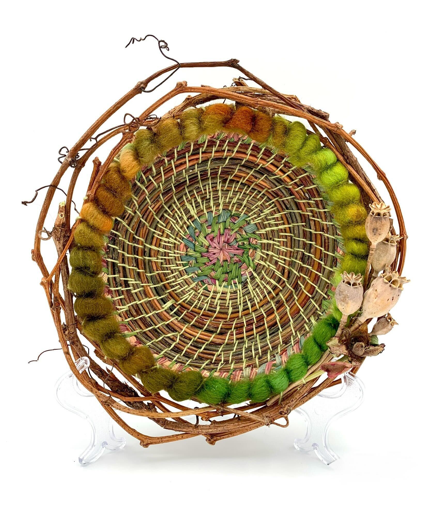
Join Tania for a relaxed and playful day of basket making. In this workshop, you will learn the art of coiled basketry using a mix of natural and reclaimed materials to create a basket that is uniquely your own.
You are invited to bring along a small personal item to incorporate into your basket: a stone or shell from your travels, a feather, a scrap of cloth, or even a photograph. These treasured pieces will become part of the structure, adding meaning and memory to the form.
Whether you are new to weaving or have some experience, this is a beautiful way to explore texture, storytelling, and personal expression through basketry.
Instruction: $80 • Materials: $50 • Total: $130
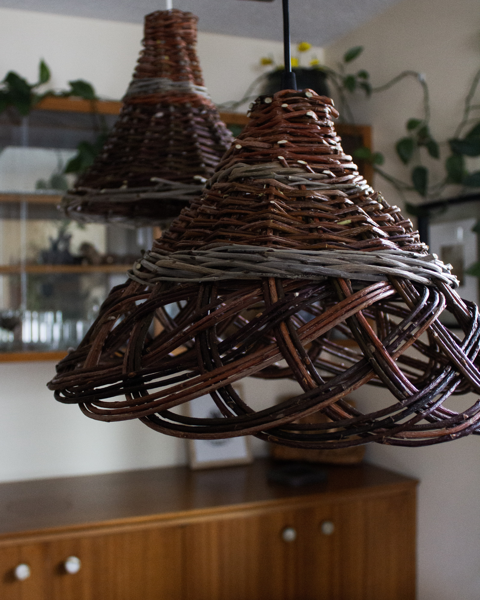
Join Mimid Design Studio (Autumn Sanders and Teagan MacNeil) for a workshop on making willow lampshades.
This class introduces participants to working with willow through a process that is both practical and exploratory.
Together, you will build a hanging lampshade using simple weaving techniques, focusing on structure, material behaviour, and form. Light hardware will be provided, allowing each piece to function as a finished object.
This class is open to all levels and is designed as a space to work with your hands, share knowledge, and connect making to place and environment.
Instruction: $120 • Materials: $40 • Total: $160
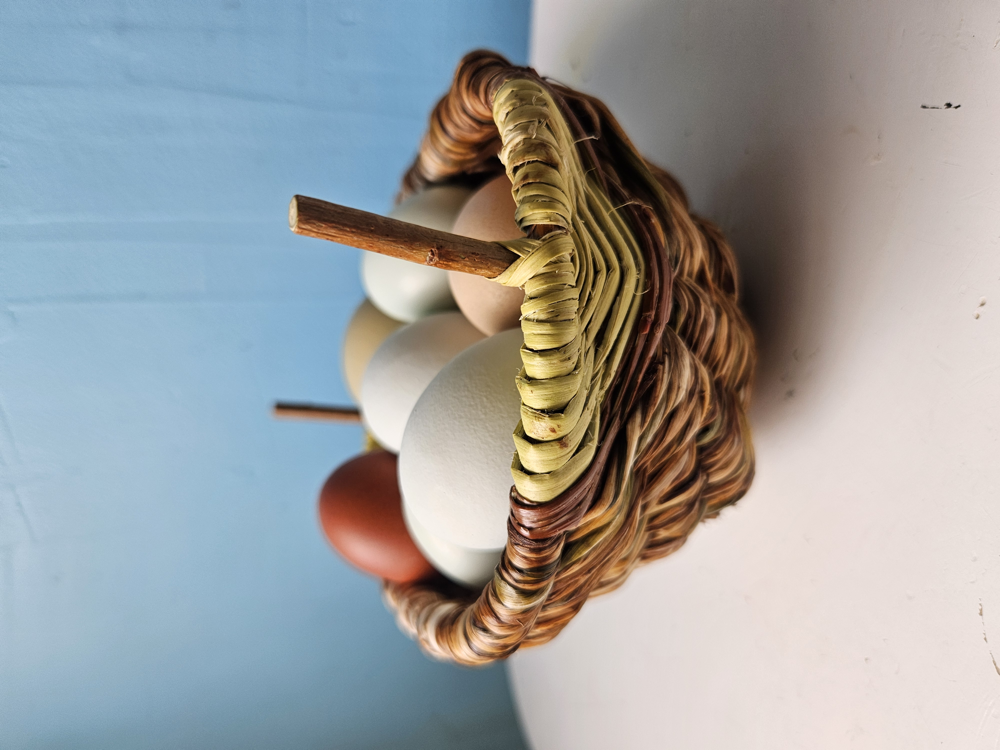
Join Mandy McKee to create a medium to small woven frame bowl using a pre-formed willow hoop, willow ribs, and soft plant fibre.
You will learn a simple lashing technique using a willow skein or thin willow to begin your structure. You will then use randing and packing techniques with natural plant fibre to fill in your bowl, sizing, slyping, and adding willow ribs as needed to achieve your desired shape.
You will be working with native willow and various seasonal soft plant material to create your piece.
Weaving framed baskets can be very meditative and your hands will develop their own unique flow while twisting and wrapping. Ribbed frame baskets provide a beautiful practice of tension and movement with natural materials, often found right outside our door.
Instruction: $120 • Materials: $40 • Total: $160
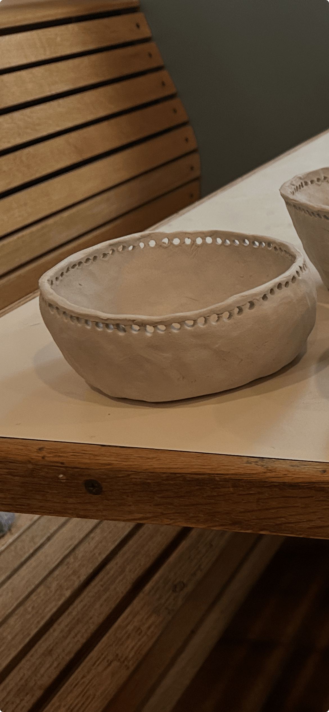
Join Tania Kristensen to combine earth and fibre in this immersive all-day workshop.
Begin with the clay pinch pot you created in August with Brittany, using it as the foundation for your vessel. From there, Tania will guide you through the slow, meditative practice of coiling pine needles, building form and texture stitch by stitch.
Participants will learn three distinct basketry stitches, along with how to responsibly harvest, prepare, and store pine needles.
This experience invites you to connect material, hand, and intention.
If you are unable to join us in making your own clay pot, Tania will have a selection of pots from Brittany you can purchase to work off of for $60.
Instruction: $90 • Materials: $25 • Total: $115
Register to make your own Pinch Pot with Brittany August 29th: https://luma.com/97f7c96i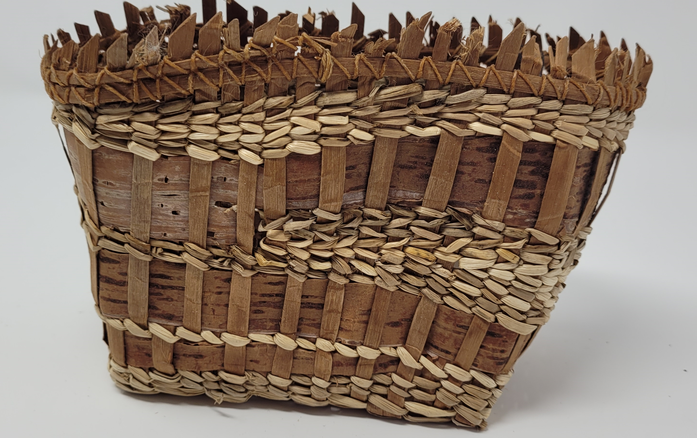
Join Cathie Harper for a day playing with bark. This functional (approximately 4” x 6” x 4”) beginner friendly bark and raffia basket is ideally suited to be an open recipe box (or whatever use you want). A special technique will allow you to do a continuous weave yet still produce raven tracks. Uneven pieces of birch bark will add your own personality to your basket. A double layer rim will result in a unique rim and learning two different rim techniques. There will be some discussions on how to prepare bark for a variety of basketry uses.
Materials will be inner western red cedar bark, birch bark, natural raffia and waxed linen. There may be some other barks and dyed raffia for use during the workshop to add enhancements. Techniques will include 2-2 twill, twining, continuous and packing weaves. The double rim consists of a simple lashed rim topped by the traditional lash/fold and flip rim.
Instruction: $120 • Materials: $55 • Total: $175
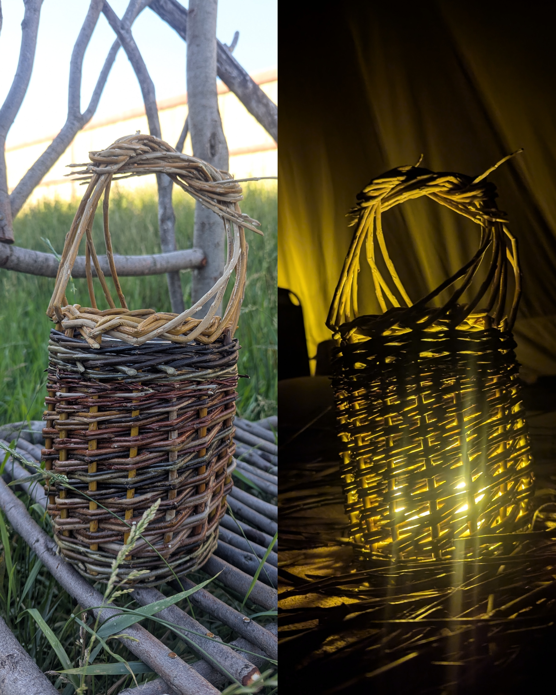
Join Betty Attwood to use wild foraged willow to make a mason jar lantern cover, with a special handle design.
Instruction: $120 • Materials: $50 • Total: $170
After supper, you are invited to join us in the meadow, where Freyja will guide us in harvesting wild grasses. We will then return to camp for a demonstration on how to weave them into a functional whisk broom as taught to us in "Field of Brooms" by Flavia Brändle.
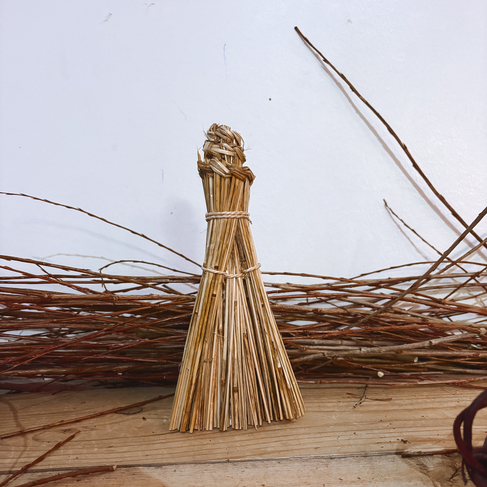
As the day softens, you are invited to gather with Kelsey and work with freshly cut willow.
Willow is a flexible and resilient wood, often growing near water and moving with the elements. As you work with it, you’ll be guided to shape your wand in a way that feels natural and intuitive.
This is a simple and meaningful process and serves as an opportunity to create with your hands and feel into your heart. Your wand can be offered to the fire as a way of releasing an intention or kept and decorated as a personal reminder of what you are calling in.
Last year Amber of Amber Lee Artistry led us through a spontaneous photo shoot, leading to the Great Basket Stack.
It was so much fun to see everyone’s baskets piled together — small baskets, big baskets — they all found a place in the stack.
How to participate? Saturday at 6 PM, bring your biggest, made-by-you basket and add it to the stack!
Amber is planning this year’s photoshoot for Saturday evening after supper, with Sunday morning as a backup in case of weather.
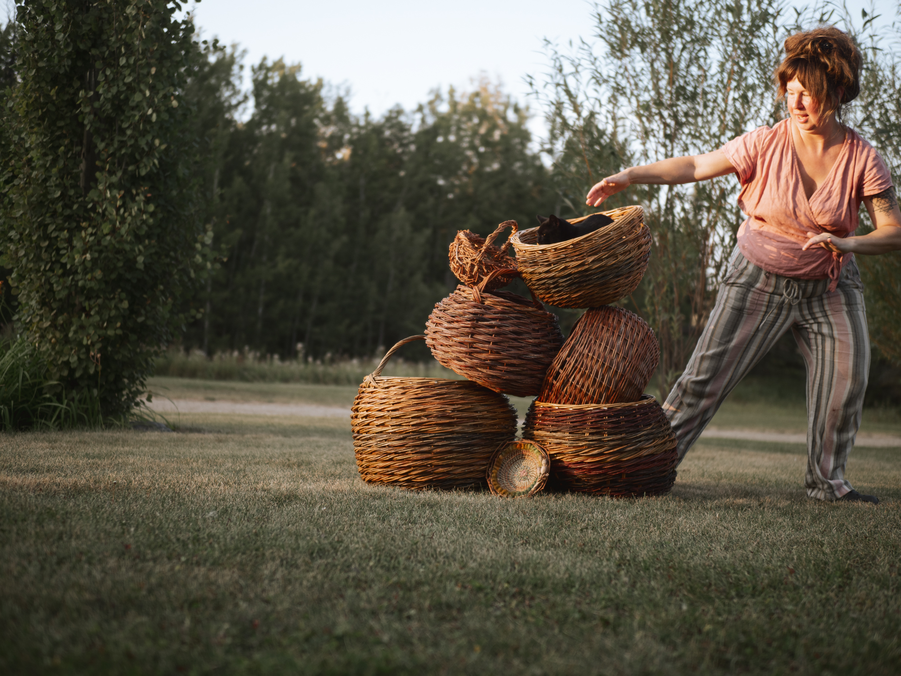
Please bring your own food for all meals.
For those interested, Tania will be hosting potluck suppers Friday and Saturday night! Please bring your dish, labeled with ingredients.
Small electric coolers and crock pots can be plugged in at the shop.
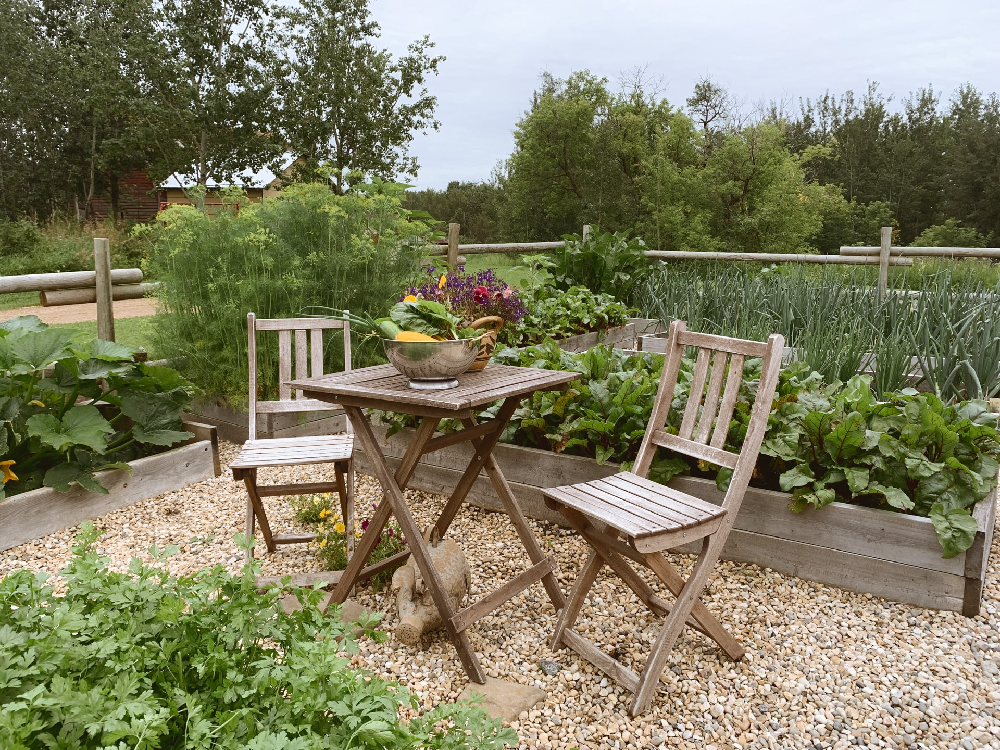
$55 for the weekend — tents and small RVs are welcome.
No generators, no dogs. Children and partners are welcome.
Camping fee covers everyone staying in your tent or trailer.
Early setup available Thursday 5–9 PM.
Please pack up by noon Monday.
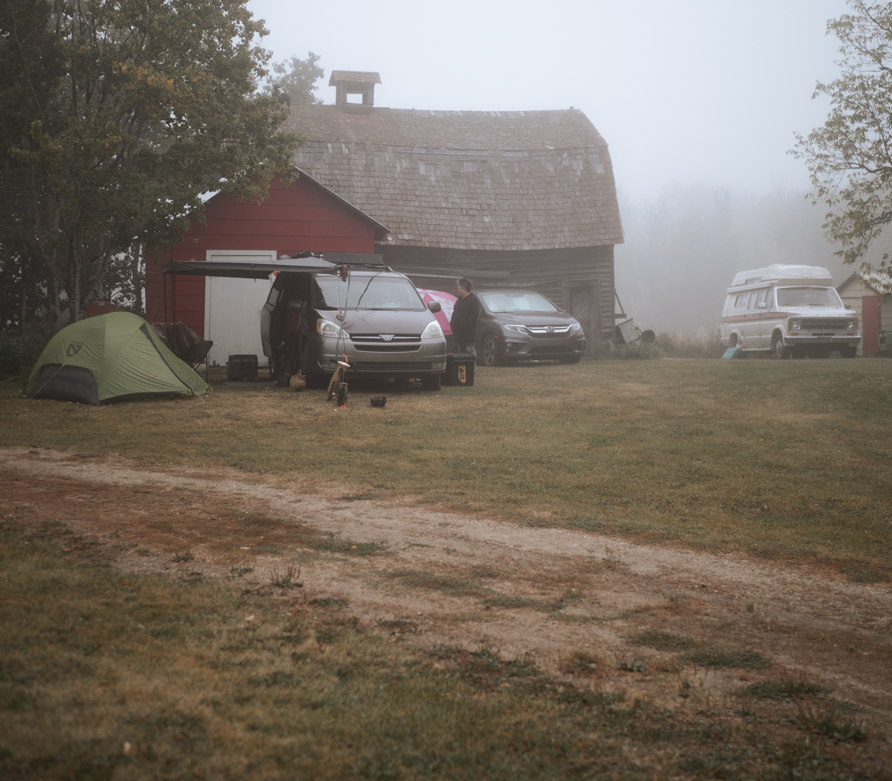
In between classes — or instead of taking a class — come sit with us at the Open Weave.
Bring your own project, or pre-purchase your materials from your Open Weave host Betty Attwood. Settle in, weave at your own pace, and enjoy the company of others. No experience needed.
Betty is accepting pre-orders for soaked willow, prepared and ready for weaving, until September 5th. To place your order, please contact her at: emattwood5@gmail.com
The Open Weave is included with your camping pass or day pass — no extra cost to join us. If you need materials, those can be purchased separately.
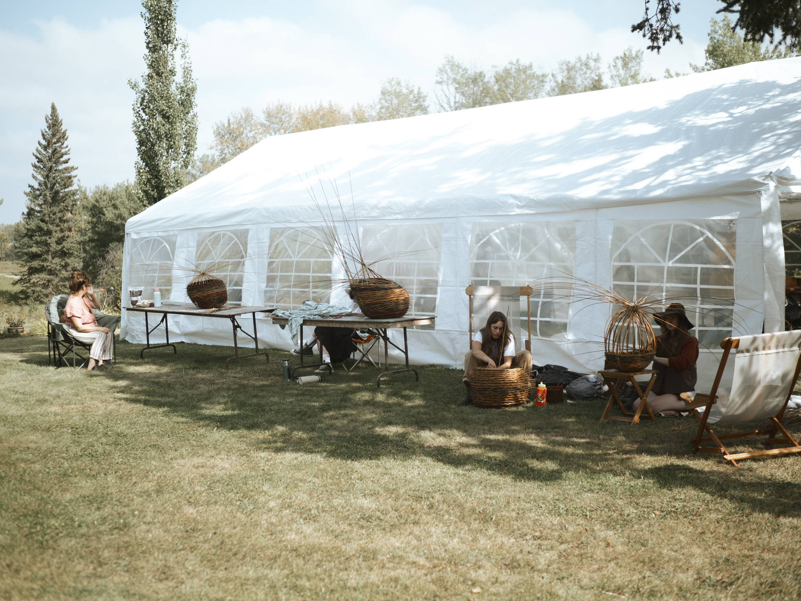
Baskets in the Garden is welcoming to people of all ages.
This year we are focusing on the inclusivity of parents, caregivers and people with children who weave with us.
To help further promote community, we will have a drop-in area for children to play throughout our weekend together. While supervision is required, the area will be within range of the classes. It is up to the discretion of the families if they are able to provide the necessary supervision during class involvement.
We would love to have your whole family join us!
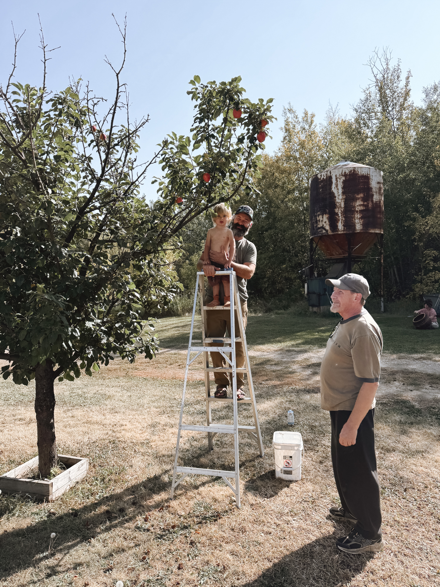
Before we can gather we need to raise the tents.
We are hoping to gather a small crew to help.
Join us at 10am on August 29th to make pinch pots with Brittany Haduck. We will break for a light lunch at 1 pm and then at 2 pm we will raise the tents.
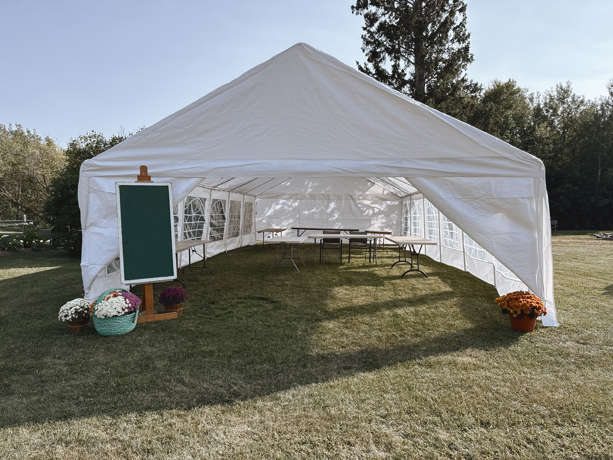
Questions? Check our terms and conditions, and cancellation policy or email us at: mail@basketsinthegarden.com
Friday
9–1
2–6
Saturday
9–1
2–6
Sunday
9–1
2–6
Twisted Willow Basket
Asymmetric Basket
Apple Picker
Mini Baskets
Basket from the Garden
Lamp Shade
Ribbed Frame Bowl
Earth & Fibre Vessel
Raven Tracks
Wild Rose Lantern